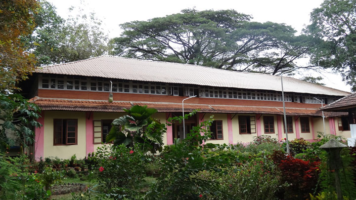

Krishnamenon Museum
Krishnamenon Museum
This history museum displays the personal possessions of the Indian nationalist V. K. Krishna Menon.
Kozhikode is a coastal city in the south Indian state of Kerala. It was a significant spice trade center and is close to Kappad Beach, where Portuguese explorer Vasco da Gama landed in 1498. The central Kozhikode Beach, overlooked by an old lighthouse, is a popular spot for watching the sunset. Inland, tree-lined Mananchira Square, with its musical fountain, surrounds the massive Mananchira Tank, an artificial pond.
This history museum displays the personal possessions of the Indian nationalist V. K. Krishna Menon.

DescriptionKappad, or Kappakadavu locally, is a beach near Kozhikode, in the district of the same name, Kerala, India. A stone monument installed by government commemorates the "landing" by Vasco da Gama with the inscription, 'Vasco da Gama landed here, Kappakadavu, in the year 1498'.
Aripara Falls [alternate spelling: Arippara Falls ] is a tourist spot in Anakkampoyil near Thiruvambady Town in Kozhikode district, Kerala. It is located on the Thiruvambady - Anakkampoyil route, 15 km from Thiruvambadi. The waterfall is a tributary of Iruvanjippuzha.